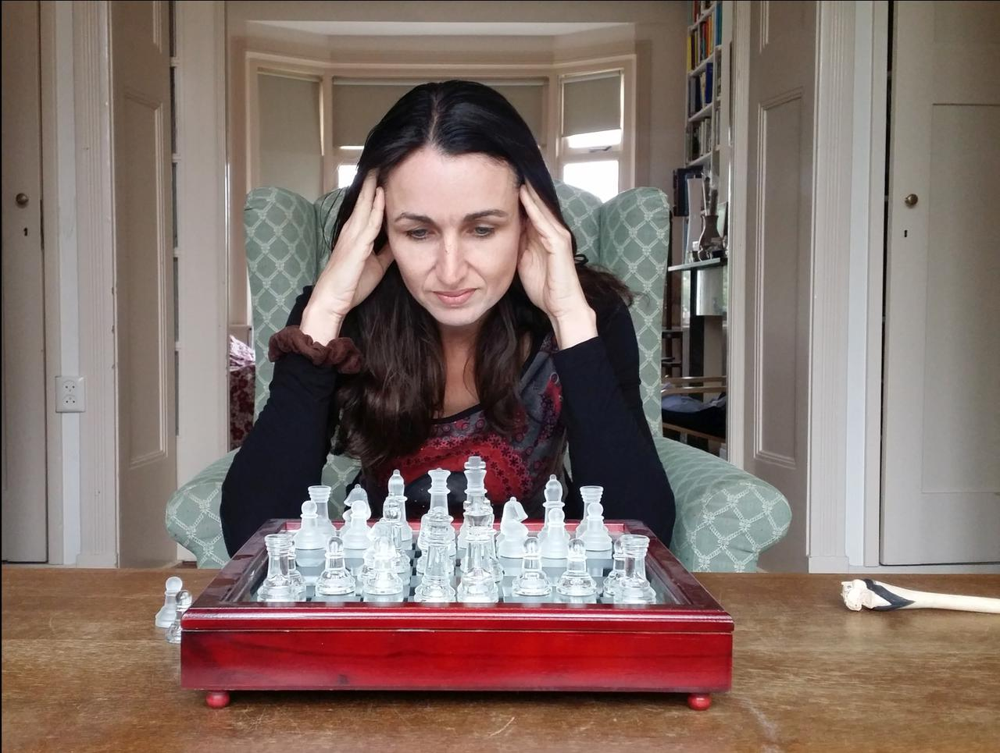
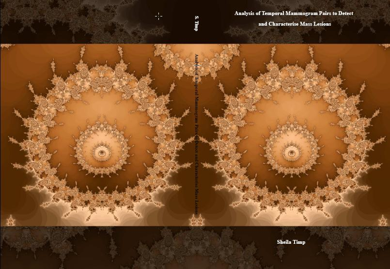
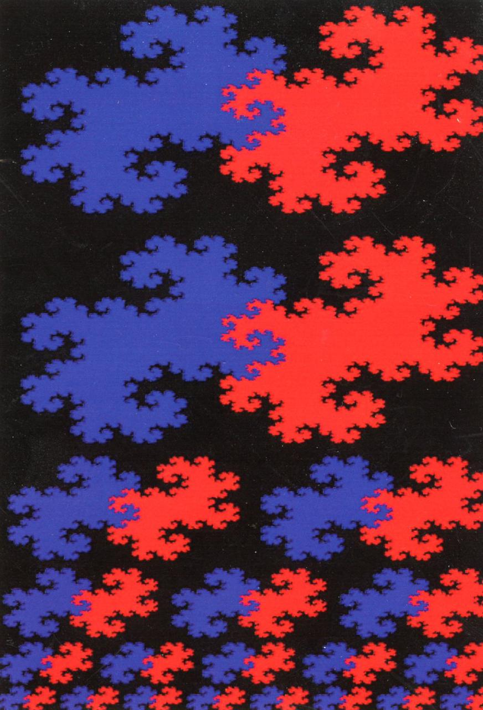

Sheila

Personal
General
- I was born on March 29 1973 in The Hague, the Netherlands.
- In the past 20 years I worked on the development of algorithms for (medical) image processing and data analysis. In my resume you can find more information about my work experience.
- In 2013 I started my own company RealChess. This company develops intelligent tools to improve your chess skills.
- In 2015 I started together with
the company
.
- My main interests are psychology, medicine, mathematics and art.
Resume
Work experience
- 2015 - now: In 2015 I started with Nicky the company Wellplanned .
- 2010 - now: Inventor of RealChess . RealChess works on the development of chess training tools.
- 2007 - 2015: Senior Software Engineer at Xpar Vision . Xpar Vision is a small, high-tech company that develops control and measurement systems for inspection, process monitoring and quality control in the container glass industry. As senior software developer I am responsible for research and development of new products, as well as training of consultants and advanced customer support.
- 2006 - 2007: Research at the department of Radiology, University Medical Centre Groningen. Several small projects on cardiac imaging (detection of stenosis, vessel segmentation) and breast cancer (develop statistical models to estimate the breast cancer risk).
- 2001 - 2005: Ph.D. at the University Medical Centre Nijmegen under supervision of prof.dr.ir. N. Karssemeijer and prof.dr. C.C.A.M. Gielen . I have developed intelligent and efficient software for the detection and classification of breast tumours on mammograms. The project was done in cooperation with R2, and the software is implemented in the clinically used R2 image checker for 'computer aided diagnosis'.
- 2000 - 2001: Project at the department of Electrical Engineering, Twente University , under supervision of prof.dr. C. Slump. I have worked on the development of software for the three dimensional visualisation of medical CT and MRI images. The project was carried out in cooperation with Philips Medical Systems.
- 1996-1997: Extended student project at the department of Biological Psychiatry UMC under supervision of prof. dr. R.C. Kahn, UMC Utrecht on 1) pharmacological treatment of schizophrenia; 2) the hypothalamus-pituitary-adrenal axis activity in children with Multiple Complex Developmental Disorder
Education
- 2006: Radiation safety expert level 3
- 2006: Ph.D. "Analysis of Temporal Mammogram Pairs to Detect and Characterise Mass Lesions".
- 2002: Propaedeutic mathematics (cum laude) at Twente University.
- 1999: Doctor of Medicine (M.D.) obtained at Utrecht University.
- 1999: Bachelor degree Psychosocial Sciences (clear pass) at the SPSO, Utrecht.
- 1997: Medical Degree obtained at Utrecht University.
- 1991: Grammar School, RSG Schoonoord Zeist.
Interests
- Working on real life problems
- Interests: Psychology, perception, medicine, medical technology, chess, art
- Technical knowledge: data analysis, pattern recognition, image processing
- Programming: C, C++, python, Java, statistics (R/S), database (SQL), Qt, Scripting languages
Thesis

To download my thesis `Analysis of Temporal Mammogram Pairs to Detect
and Characterise Mass Lesions', which I finished in 2006, press:
.
The cover is a fractal breast image and was made by Deborah Lee Soltesz .
Fractals are patterns that repeat themselves at every scale. Fractals are mathematical structures, but can also be found in nature. There are many nice websites about fractals (for instance fractalfoundation, where you can find beautiful pictures as well as software to explore fractals yourself).
For my breast cancer research I used fractals to detect tumours in mammograms.
For the birth of the twins a had the following birth card with the so-called /images/twin dragon fractal .
